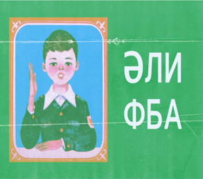
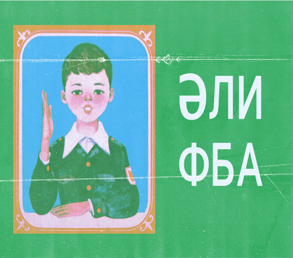

Вот прям всё при всё
Современный татарский язык в своём становлении претерпел множество изменений, сформировался из булгарского, кыпчакских и чагатайских диалектов тюркских языков. Подробнее
В разное время для татарского языка использовались разные системы письма:Подробнее
Народно-разговорный татарский язык исследователями делится либо на 3, либо на 5 основных диалектов.Подробнее

 

Башки́ры — тюркский народ, коренное население Башкортостана и одноимённой исторической области. Численность в мире около 2 миллионов человек. В Российской Федерации по данным Всероссийской переписи населения 2010 года проживало 1 584 554 башкира, а по данным переписи населения 2020 года численность башкир составила 1 571 879 человек.


Чува́ши — тюркский народ численностью в мире — 1 111 600 (2023), из них в России — 1 067 139. В Чувашской Республике проживает больше половины всех чувашей, живущих в России, остальные проживают практически во всех регионах России.
Удму́рты — финно-угорский народ, в основном проживающий в Удмуртской Республике и соседних регионах России. Говорят на удмуртском и русском языках. 58,7 % удмуртов назвали родным удмуртский язык, который относится к пермской группе финно-угорской семьи.